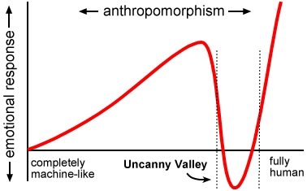

Transitioning Is an Act of Strength
You gave up everything I’ve spent my life fighting for. I can’t imagine how much you must have been hurting inside to choose to do that.
-Sarah Novotny
Life, Changes§
A few days ago, I was having dinner with Sarah at one of our old haunts — it’s been four years since she moved away from Seattle, and the same Ethiopian restaurant is still here, still serving up the same delicious dinners on platters of Teff Injera. Somehow, it seems longer than four years. So much has changed in that time.
We’ve both built our careers around open source, and I have respected and admired her tenacity and her compassion for as long as I’ve known her. Sarah is several years my senior in the community, with considerably more reputation and public visibility, and yet in the past decade we’ve both moved through roles as project leads and VPs, sharing stories along the way.
City Mouse or Country Mouse?§
As dinner went on, conversation turned to housing, to dreams of future plans.
Just after she moved away, I lived for a year in a beautiful downtown penthouse with a water view over the ferry docks, and the farmer’s market just three blocks away… Living there taught me how much my sleep cycle and mental health benefit from being connected to the sunset, and how much I enjoy an urban lifestyle that’s hard to find in the US. I’d like to find that again.
I also want to have land in the countryside again. I used to have five acres, but gave it up in a divorce; I think twenty acres would be good — enough space for friends, some chickens, dogs, and farms to grow our own food.
Who wants to start a queer commune with me?
And we talked about rebuilding our lives, the ongoing process of figuring out who we are in light of physical changes. We’ve each given Ignite Talks about what a changing identity means at the intersection of technology, public perception, and personal change.
Is Perception == Identity?§
I say I came out as trans because I wasn’t willing to give up my social and professional network, so the only option was to ask everyone to change their perception of my identity. I wasn’t willing to sever ties with my coding history even as I changed my name and online handles, though I’m still struggling with this. Everyone’s journey is radically unique, and I learned that there’s no playbook for transitioning as a mid-career professional in open source. My reputation is a valuable assets built over fifteen years, with ties to a global & multicultural community. That reputation, it’s part of my identity.
The me that my network knew wasn’t me any more, and that left only one option: accept the risks that come from telling everyone.
A Coming Out Plan§
Why don't you just dress like a guy for the interview?
-well-meaning male colleague
I began this gender-journey with a vague plan — I couldn’t transition within the VP role that I had in 2017, so I left.
I took six months off work before starting a role as Staff Researcher in the Samsung Open Source Group. I had a supportive manager, and would be paid well to work from home and guide their open source cloud contributions. This should have set me up for several years – enough time for my plan – but circumstances unrelated to me ended that very suddenly ….
By this time, I’d had a year of HRT and donated most of my pre-transition clothes. I call this time the Uncanny Valley.
The Uncanny (Gender) Valley§

Interviewing in 2019 was a nightmare – my resume and my reputation got me dozens of in-person interviews for roles as a director, or as a principal / staff engineer… and even though I’d held roles at that level for the past five years, no one would make an offer! Almost every interviewer was a man in their late 40’s, and they were all suddenly, visibly, uncomfortable around me.
Hearing of my struggles, a few well-meaning male colleagues suggested that I just dress like a guy for interviews….
Ouch.
They didn’t know how much that hurt.
My Gender Is Not Armor Any More§
So after almost a year without health insurance and two years without steady income, my transition plan was a wreck in the rear-view mirror. I had a dwindling savings account and a shrinking network, and I settled for the first tangible offer I got. It’s the same career level I held in 2012, but it’ll pay the rent and the doctor’s bills.
You know what’s more important than my career?
I’m happy in my own body for the first time in 20 years.
You know what I want back?
My career.
Strength In Vulnerability§
When I had finished sharing my story with Sarah, she shook her head and, with all the kindness in the world, said words I’ll never forget:
“You gave up everything I’ve spent my life fighting for. I can’t imagine how much you must have been hurting inside to choose to do that.”
Yeah. You get it.
I’ve learned through experience how much our identity is defined by others, how who we are exists in relation to how we’re perceived, and how painful it is to live with the cognitive dissonance of an identity that looks nothing like one’s sense of self.
I’m not wearing armor to hide any more.
And it feels so good to be seen.